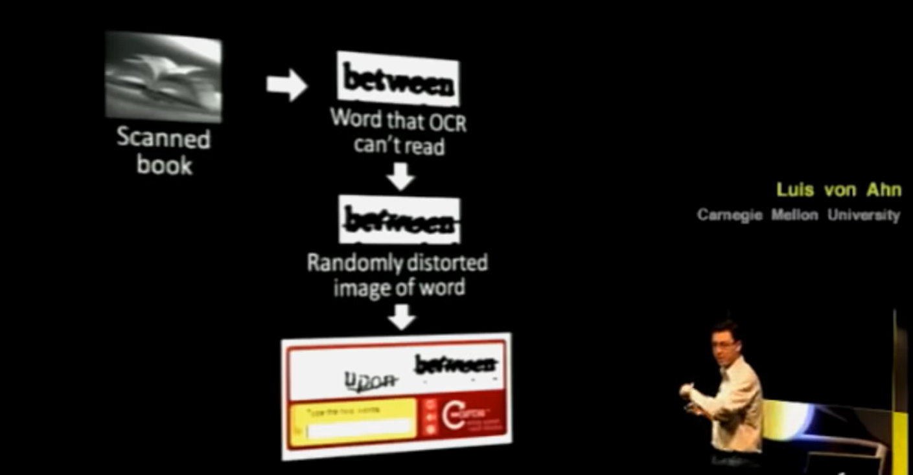
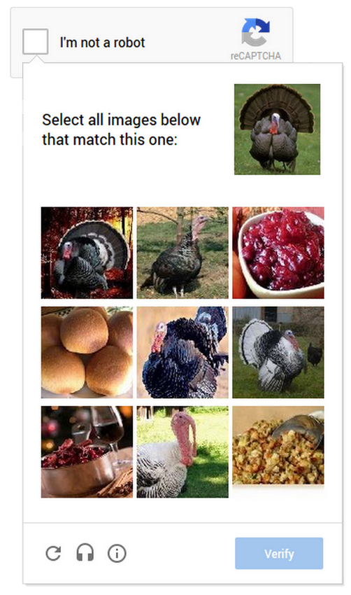

1 Introdução
Captcha (Completely Automated Public Turing test to tell Computers and Humans Apart) é um desafio utilizado para identificar se o acesso à uma página na internet é realizada por uma pessoa ou uma máquina. O desafio é projetado para ser fácil de resolver por humanos, mas difícil de resolver por máquinas. Outro nome para os Captchas é Human Interaction Proofs, ou HIPs (CHELLAPILLA et al., 2005).
Um Captcha pode ser classificado como uma variação do teste de Turing (TURING, 2009). A diferença no caso do Captcha é que a avaliação da humanidade do agente é feita por uma máquina ao invés de uma pessoa – por isso o termo automated. Captchas podem ser classificados em algumas situações com os chamados testes de Turing reversos, apesar dos autores originais afastarem essa caracterização (AHN; BLUM; LANGFORD, 2002).
Captchas estão presentes em toda a internet. Inicialmente criados para prevenir spam (Sending and Posting Advertisement in Mass), os desafios se tornaram populares rapidamente (AHN et al., 2008), sendo utilizados como forma de evitar evitar o uso indevido de aplicações da web. Algumas ações que os desafios podem ajudar a evitar são:
- Criação de contas falsas nos sites.
- Envio automático de mensagens, via email ou formulários de contato.
- Operações automatizadas, como compra de ingressos para eventos e voto automático em sites de votação.
- Voto automático em ferramentas de votação na internet.
- Consulta automatizada em sites para obtenção de dados.
O uso de Captchas tem, por princípio, o objetivo de aumentar a segurança das pessoas que acessam a internet e proteger os sistemas web de uso abusivo. Para pessoas que acessam os sites pontualmente, a presença de Captchas representa um mero dissabor; para quem realiza acessos massivos, uma grande dificuldade.
No entanto, o uso de Captchas não é adequado em todas as situações. Um exemplo são os sites de vendas: o uso dos desafios pode aborrecer o usuário, alterando a qualidade da sua experiência. Os sites devem levar esse fator de aborrecimento em conta para não reduzir a taxa de conversão. Em alguns casos, pode fazer mais sentido abandonar os Captchas e utilizar outros mecanismos de prevenção à fraude, como monitoramento da sessão do usuário («Inaccessibility of CAPTCHA», [s.d.]).
Também existem casos em que o uso de Captchas é prejudicial. Sua utilização em serviços públicos do Brasil, por exemplo, é problemática, como discutido na próxima seção.
Captchas em serviços públicos
A Constituição Federal de 1988 (CF), em seu inciso XXXIII do art. 5º, prevê que “todos têm direito a receber dos órgãos públicos informações de seu interesse particular, ou de interesse coletivo ou geral, que serão prestadas no prazo da lei, sob pena de responsabilidade, ressalvadas aquelas cujo sigilo seja imprescindível à segurança da sociedade e do Estado;”. Essa previsão é implementada pela Lei de Acesso à Informação (Lei 12.527/2011; LAI), que se aplica “aos órgãos públicos integrantes da administração direta dos Poderes Executivo, Legislativo, incluindo as Cortes de Contas, e Judiciário e do Ministério Público”, bem como “as autarquias, as fundações públicas, as empresas públicas, as sociedades de economia mista e demais entidades controladas direta ou indiretamente pela União, Estados, Distrito Federal e Municípios” (Art. 1º).
A LAI, apesar de trazer diversos benefícios à sociedade, tem dois problemas. A primeira é o esforço: tanto a pessoa/órgão que solicita os dados, quanto o órgão que retorna os dados precisam trabalhar para disponibilizar as informações, sendo necessário deslocar equipes para realizar os levantamentos pedidos. A segunda é o formato: os dados enviados como resultado de pedidos de LAI podem chegar em formatos inadequados para consumo da solicitante, muitas vezes em Portable Document Format (PDF), que dificulta a leitura e análise dos dados (MICHENER; MONCAU; VELASCO, 2015, pág. 55); além disso, como o levantamento é realizado de forma individualizada, o mesmo pedido feito em diferentes períodos (e.g. uma atualização mensal dos dados) pode vir em formatos diferentes, dificultando a leitura e arrumação dos dados.
Uma forma de evitar os problemas de esforço e formato em pedidos de LAI é disponibilizar os dados de forma aberta. Como definido pela Open Knowledge Foundation (OKFN), a base de dados “deve ser fornecida em uma forma conveniente e modificável isento de obstáculos tecnológicos desnecessários para a realização dos direitos licenciados. Especificamente, os dados devem ser legíveis-por-máquina, disponíveis todo o seu volume, e fornecidos em um formato aberto (ou seja, um formato com sua especificação livremente disponível, e publicada sem qualquer restrições, monetárias ou não, da sua utilização) ou, no mínimo, podem ser processados com pelo menos uma ferramenta de software livre e gratuita.”1
As vantagens ao disponibilizar dados públicos de forma aberta para a sociedade é um tema pacífico na comunidade científica (MURRAY-RUST, 2008). Infelizmente, existem diversos dados públicos que não estão disponíveis de forma aberta, em plataformas como o dados.gov.br.
A dificuldade de acesso é particularmente evidente no Poder Judiciário, que além de não disponibilizar um portal de dados abertos, impõe barreiras aos pedidos de acesso à informação por utilizar diversos sistemas para armazenar os dados. Por exemplo, para pedir uma lista de todos os processos judiciais relacionados a recuperação judicial de empresas, as únicas alternativas são i) pedir os dados ao Conselho Nacional de Justiça (CNJ), que não possui informações suficientes para obter a lista2 ou ii) expedir ofícios aos 27 Tribunais Estaduais. Cada tribunal apresentaria diferentes opções e critérios de acesso aos dados, diferentes prazos para atendimento e diferentes formatos, podendo, inclusive, negar o pedido de acesso.
A dificuldade para acessar os dados do judiciário é a principal barreira para realização de pesquisas pela Associação Brasileira de Jurimetria (ABJ), empresa na qual o autor desta tese trabalha. A entidade tem como missão principal a realização de estudos para implementar políticas públicas utilizando dados do judiciário.
Dos 16 projetos disponibilizados na página de pesquisas no site da ABJ, pelo menos 12 (75%) apresentaram dificuldades na obtenção dos dados via pedidos de acesso aos órgãos. Três exemplos icônicos são o da pesquisa sobre Tempo dos processos relacionados à adoção no Brasil («Tempo dos processos relacionados à adoção», [s.d.]), o Observatório da Insolvência: Rio de Janeiro («Observatório da insolvência», [s.d.]) e o Diagnóstico do Contencioso Tributário Administrativo («Diagnóstico do Contencioso Tributário Administrativo», [s.d.]). No primeiro caso, dois tribunais enviaram os dados em arquivos em papel, sendo que um deles ultrapassou mil páginas com números de processos impressos. No segundo caso, o pedido foi respondido com uma planilha de contagens ao invés da lista de processos. No último caso, até mesmo órgãos que faziam parte do grupo de trabalho da pesquisa negaram pedido de acesso a dados de processos tributários em primeira instância, com argumentos que variavam desde a dificuldade técnica de levantar os dados até a Lei Geral de Proteção de Dados (LGPD).
Em muitas situações, portanto, a única alternativa para realizar as pesquisas é acessando os dados via coleta automatizada nos sites. Todos os tribunais possuem ferramentas de consulta individualizadas de processos, por conta do que está previsto na CF. A solução, portanto, passa a ser construir uma ferramenta que obtém todos os dados automaticamente. Tal conceito é conhecido como raspagem de dados (ZHAO, 2017) e será desenvolvido com maiores detalhes no Capítulo Capítulo 2.
Os Captchas se tornam prejudiciais à sociedade quando o acesso automatizado é necessário para realizar pesquisas científicas. Infelizmente, boa parte dos tribunais utilizam a barreira do Captcha. Alguns tribunais, inclusive, têm o entendimento de que o acesso automatizado é prejudicial, como o TJRS, que emitiu um comunicado sobre o tema.
Uma justificativa comum para implementar Captchas em consultas públicas é a estabilidade dos sistemas. Ao realizar muitas consultas de forma automática, um robô pode tornar o sistema instável e, em algumas situações, até mesmo derrubar o servidor que disponibiliza as consultas.
O problema é que utilizar Captchas não impede o acesso automatizado. As empresas que fazem acesso automatizado em tribunais podem construir ferramentas ou utilizar serviços externos de resolução de Captchas. Ou seja, ao utilizar Captchas, o acesso não é impedido, e sim especializado.
Além disso, utilizar Captchas é uma solução ineficiente. Do ponto de vista técnico, a solução mais eficiente para disponibilizar os dados é através de ferramentas de dados abertos como o Comprehensive Knowledge Archive Network (CKAN). Ao disponibilizar os dados de forma aberta, as consultas automatizadas ficariam isoladas dos sites de consulta pública, o que garantiria o acesso das pessoas sem problemas de indisponibilidade.
Não é só para as pessoas que fazem pesquisa com dados públicos que o uso de Captchas pode ser prejudicial. No mercado, existem serviços de resolução de Captcha que utilizam mão de obra humana, em regimes que pagam muito menos do que um salário mínimo a 8 horas de trabalho. Um exemplo é o 2Captcha3, que funciona como um Uber dos Captchas: o algoritmo automatizado envia o Captcha para a plataforma, que é acessado e resolvido por uma pessoa, retornando a solução para o algoritmo. O 2Captcha é operado pela ALTWEB LLC-FZ, uma empresa com base em Dubai4.
Segundo o site, o valor pago pelo 2Captcha é de US$ 0.5 para 1 a 2 horas de trabalho. No regime da Consolidação das Leis do Trabalho (Decreto-Lei 5.452/1943, CLT) as horas mensais de trabalho são 220. Trabalhando continuamente no 2Captcha, isso daria um salário de 55 a 110 dólares por mês, valor bem abaixo do salário mínimo, que no ano de 2022 era de R$ 1.100,005. Ou seja, os serviços públicos acabam, indiretamente, incentivando um mercado que paga abaixo do salário mínimo. Luis von Ahn, um dos criadores dos Captchas, define o 2Captcha como um sweatshop, um termo utilizado para caracterizar empresas que têm condições de trabalho inaceitáveis.
A solução definitiva para os problemas gerado pelos Captchas é a disponibilização dos dados públicos de forma aberta. Na ausência dessa solução, seja por falta de interesse ou iniciativa dos órgãos públicos, a alternativa é desenvolver uma solução para resolver Captchas que seja gratuita e aberta. Tal solução desincentivaria economicamente o uso de sistemas como o 2Captcha, protegendo as pessoas que fazem as resoluções e permitindo que as pessoas pesquisadoras realizem seus levantamentos.
O presente trabalho busca avançar nesse sentido. A solução desenvolvida envolve um modelo que resolve alguns Captchas automaticamente, reduzindo significativamente a necessidade de rotulação manual.
Para compreender completamente o avanço que a tese representa, no entanto, é necessário apresentar o histórico de desenvolvimento dos Captchas. O histórico é apresentado na próxima Seção, através da luta de geradores e resolvedores de Captchas, que pode ser dada como encerrada no ano de 2018, com o advento do reCaptcha v3.
Uma luta entre geradores e resolvedores
O primeiro texto técnico sobre Captchas foi publicado por AHN; BLUM; LANGFORD (2002). O texto apresenta o Captcha e seu significado através do problema de geração de emails automáticos no Yahoo. Em seguida, apresenta alguns exemplos de candidatos a Captcha, com tarefas de reconhecimento de padrões ou textos. Uma característica interessante que os autores colocam sobre o Captcha é que suas imagens devem ser disponíveis publicamente. O texto também faz a conexão entre a tarefa dos Captchas e os desafios da inteligência artificial. Um ponto a destacar é que os autores defendem que os Captchas devem ser resolvidos, pois isso implica em avanços na inteligência artificial. O site original do projeto, The Captcha Project, foi lançado em 2000.
O relatório técnico de AHN; BLUM; LANGFORD (2002) não foi o primeiro a apresentar o nome Captcha, nem suas aplicações. RESHEF; RAANAN; SOLAN (2005) foi o primeiro registro de patente com o termo e LILLIBRIDGE et al. (2001) foi o primeiro registro de patente que implementou uma solução aos sistemas de Captchas. No entanto, o relatório de 2002 é o primeiro que reconhecidamente trata do tema como um problema de inteligência artificial como um teste de Turing automatizado.
Os artigos mais conhecidos de introdução aos Captchas são VON AHN et al. (2003) e VON AHN; BLUM; LANGFORD (2004). O conteúdo dos trabalhos é o mesmo, sendo o primeiro deles na forma de apresentação e o segundo na forma de relatório. A apresentação é a primeira a mostrar o projeto reCaptcha, que será comentado em uma subseção própria. Um detalhe interessante é a ênfase dos autores no termo Public dos Captchas, mostrando a preocupação em manter os códigos públicos.
Os autores também defendem que o Captcha é uma forma de fazer com que pessoas mal intencionadas contribuam com os avanços da inteligência artificial. Se uma pessoa (ainda que mal intencionada) resolve um Captcha e publica essa solução, isso significa que a comunidade científica avançou na área de inteligência artificial.
Não demorou para surgirem os primeiros resolvedores de Captchas6. MORI; MALIK (2003) foi um dos primeiros trabalhos publicados sobre o tema e utiliza diversas técnicas de processamento de imagens para obter os rótulos corretos. Também não demorou para a comunidade científica perceber que redes neurais eram úteis nesse contexto (CHELLAPILLA; SIMARD, 2004). No artigo de 2004, Chellapilla e Simard desenvolvem um algoritmo baseado em heurísticas para segmentar a imagem e redes neurais para identificar as imagens individuais.
A partir desse ponto, foi iniciada uma luta entre geradores e resolvedores de Captchas. Do lado dos geradores, as pessoas envolvidas foram tanto acadêmicos tentando desenvolver desafios cada vez mais difíceis para avançar na pesquisa em inteligência artificial, quanto empresas de tecnologia tentando se proteger contra programas avançados. Do lado dos resolvedores, as pessoas envolvidas foram tanto acadêmicos tentando desenvolver novas técnicas para avançar nos modelos de reconhecimento de imagens, quanto spammers buscando novas formas de realizar ataques cibernéticos.
Um dos geradores de Captchas mais conhecidos é Luis von Ahn, que também é um dos criadores do Captcha. Um pedaço da história está disponível nos primeiros cinco minutos da entrevista com Luis Von Ahn em um programa chamado Spark7. Na entrevista, Von Ahn conta um pouco da origem dos Captchas em Carnegie Mellon, contando que ficou frustrado com o fato das pessoas perderem tempo de inteligência humana ao resolver Captchas, o que deu origem ao reCaptcha. Outro vídeo instrutivo é uma palestra de Von Ahn na Thinking Digital Conference sobre a história do reCaptcha8. Segundo ele, a startup foi criada em maio de 20079, depois de von Ahn perceber que aproximadamente 200 milhões de Captchas eram resolvidos diariamente.
O reCaptcha v1 foi uma solução de aproveitar o tempo das pessoas que resolvem Captchas para digitalizar livros (AHN et al., 2008). A ideia do reCaptcha, como demonstrada na Figura 1.1, foi apresentar duas palavras distorcidas para a pessoa: a primeira seria utilizada para verificar se a pessoa era um humano, e a segunda seria utilizada para decifrar um texto que os robôs na época não conseguiam ler. Em 2009, a empresa foi comprada pela Google, que utilizou o reCaptcha para digitalizar os Google Books.
Curiosamente, foi com a própria Google que os resolvedores ficaram em vantagem na luta. Os modelos de inteligência artificial continuaram avançando, notadamente com o avanço dos modelos de redes neurais profundas (LECUN; BENGIO; HINTON, 2015). No trabalho de GOODFELLOW et al. (2013), todos funcionários da Google na época, foi apresentado um modelo de redes neurais convolucionais que resolvia o reCaptcha v1 com 99.8% de acurácia. No ano seguinte, em 2014, a Google descontinuou o reCaptcha v1, lançando o reCaptcha v2.10
O reCaptcha v2 apresentou duas inovações importantes. O primeiro foi o botão “I’m not a robot”, um verificador automático do navegador que utiliza heurísticas para detectar se o padrão de acesso ao site se assemelha com um robô ou humano. O segundo foi a mudança no tipo de tarefa: ao invés de rotular um texto distorcido, o desafio passou a ser identificar objetos e animais, como na Figura 1.2.
A mudança do tipo de tarefa de visão computacional mudança foi importante para o sucesso do reCaptcha v2. Isso ocorre porque o desafio é mais difícil, já que existem muito mais objetos e imagens do que letras e números, aumentando significativamente o suporte da variável resposta. Por exemplo, um modelo para identificar um reCaptcha de gatos pode ser facilmente desenvolvido a partir de uma base pré-classificada, potencialmente custosa para ser construída. O reCaptcha v2, no entanto, pode facilmente mudar a tarefa para identificar leões, cães, hidrantes e semáforos, inutilizando o modelo criado para classificar gatos. O reCaptcha v2 também foi um sucesso para treinar os modelos desenvolvidos pela própria Google: usando o mesmo princípio do reCaptcha v1, a humanidade era verificada com apenas uma parte das imagens. As outras imagens eram utilizadas para rotular imagens, utilizadas para aprimorar os modelos utilizados nos projetos de carros autônomos, Google Street View e outras iniciativas da empresa.

Com o advento do reCaptcha v2, a pergunta dos resolvedores de Captcha passou a ser: como criar modelos que funcionam razoavelmente bem nos Captchas sem a necessidade de rotular vários casos? Se esse desafio fosse resolvido, dois avanços aconteceriam: i) um grande avanço na inteligência artificial, especificamente na área de visão computacional, e ii) uma nova forma de vencer a luta.
Até o momento de escrita da tese, não existia um modelo geral que resolvesse com alta acurácia todos os desafios colocados pelo reCaptcha v2 e seus concorrentes. No entanto, vários avanços apareceram no sentido de reduzir a quantidade de imagens rotuladas para criar candidatos a resolvedores. Dentre eles, o mais significativos são os baseados nas redes generativas adversariais (Generative Adversarial Networks, ou GANs), propostas no famoso trabalho de GOODFELLOW et al. ([s.d.]). O primeiro trabalho que utiliza modelos generativos no contexto de Captchas mostrou uma redução de 300x na quantidade de dados classificados necessária para resolver um Captcha (GEORGE et al. (2017); nesse caso, os autores propõem uma rede diferente do GAN, chamada Recursive Cortical Network, ou RCN). Outros trabalhos mais recentes (WANG et al., 2021; YE et al., 2018) avançam ainda mais na pesquisa, reduzindo o trabalho de classificação para um novo Captcha de texto para aproximadamente 2 horas.
Mas foi em 2018, com o reCaptcha v3, que a Google deu a palavra final. Com a nova versão, as verificações de navegador passaram a ser muito mais poderosas, sendo raros os casos em que o site fica em dúvidas se a pessoa é ou não um robô. Versões mais recentes, como o reCaptcha Enterprise, de 2020, ainda permitem que as pessoas que mantêm os sites façam o ajuste de modelos de detecção de robôs. Os desafios de reconhecimento de texto, objetos ou imagens perderam a importância.
Então, no final, quem venceu a luta de geradores e resolvedores? Na verdade, nenhuma das duas! O que ocorreu com o reCaptcha v3 e seus sucessores foi, no fundo, uma mudança de perspectiva: o Captcha deixou de ser um sistema passivo e passou a ser um sistema ativo de verificação. Ao invés de criar uma tarefa difícil de resolver por robôs e fácil de resolver por pessoas, os sistemas criaram uma camada de verificação da sessão de acesso do usuário, incluindo análises do navegador, dos cookies e dos padrões de cliques. Antes mesmo de chegar no desafio de reconhecimento, o algoritmo de acesso precisa enganar os verificadores. Essa tarefa é muito mais parecida com um problema de cyberataque do que uma tarefa de inteligência artificial.
A guerra entre sites e spammers continua, mas não é mais uma luta entre geradores e resolvedores. Por conta disso, os desafios dos Captchas, sejam de texto ou de imagem, são hoje muito mais uma questão acadêmica do que uma questão de segurança. A pesquisa sobre Captchas ainda é promissora e pode gerar muitos resultados importantes para a área de inteligência artificial.
Infelizmente, Captchas de textos em imagens continuam sendo populares na internet. Isso é especialmente evidente nos serviços públicos – objeto deste trabalho –, já que os serviços raramente são atualizados com ferramentas mais recentes. Desenvolver uma ferramenta que facilita a resolução de Captchas em sites públicos é uma forma de incentivar os sites a serem atualizados. Se o Captcha inseguro parar de fazer efeito prático, os sites terão de atualizar a tecnologia, seja colocando Captchas mais poderosos, que é o resultado indesejado, ou disponibilizando os dados públicos de forma aberta, que é o resultado desejado.
Essa é a lacuna identificada a partir da observação do estado atual dos serviços públicos e dos trabalhos acadêmicos analisados. Nesta pesquisa, será apresentado um fluxo de trabalho que pode ser facilmente aplicado a diferentes modelos de resolução de Captchas, incluindo arquiteturas que ainda não foram desenvolvidas. O fluxo de trabalho funcionará como um acelerador do aprendizado, possibilitando a criação de modelos que não precisam de intervenção humana. O resultado será encontrado explorando o potencial de uso do oráculo, apresentado na próxima seção.
Oráculo
Modelos de aprendizagem profunda usuais, quando ajustados sem cuidado, são muito sensíveis a perturbações pequenas nas imagens (YUAN et al., 2019). Por isso, se o site de um tribunal, por exemplo, mudar o Captcha utilizado, seria necessário baixar e anotar uma nova base de dados para treinar o modelo. Os avanços em técnicas de regularização fazem com que o modelo seja menos afetado por mudanças nos desafios gerados. Uma técnica de regularização que ajuda na capacidade de generalização é a aumentação de dados com adição de ruídos (NOH et al., 2017). No entanto, nenhuma técnica garante que o modelo terá excelentes resultados em novos desafios.
Outra alternativa é desenvolver modelos que aprendem com poucos dados anotados. Como comentado anteriormente, GANs e modelos relacionados podem apresentar bons resultados na resolução de tarefas de imagens, mesmo com uma base de dados anotada. Nesse sentido, ainda que um site mude seu Captcha, é possível ajustar um modelo que resolve esse Captcha sem a necessidade de anotar muitos exemplos para construir uma nova base de treino.
Nessa tese, apresenta-se uma nova técnica para resolver Captchas com poucos dados anotados, chamada de oráculo. A técnica consiste em aproveitar o fato de que o Captcha aplica um teste de Turing automático para gerar bases de dados automaticamente. Ou seja, a técnica resolve o problema não com modelos mais sofisticados, mas com a utilização eficiente dos recursos disponíveis. Qualquer modelo pode se aproveitar dessa característica dos Catpchas, incluindo arquiteturas que ainda não foram desenvolvidas.
Oráculo é a resposta do site pesquisado, afirmando se o rótulo enviado está correto. Eles estão disponíveis em todos os sites com Captchas, já que, por definição, o Captcha precisa apresentar o resultado do teste para o usuário. O nome “oráculo” foi inspirado na mitologia grega, partindo do fato de que o site já possui a informação correta, como um deus. O site, no entanto, se comunica com o usuário através de um intermediário (o oráculo) que apresenta a resposta de forma limitada.
Oráculos se manifestam de diversas formas nos sites com Captchas. Por exemplo, pode dar a possibilidade de realizar apenas um teste por imagem, vários testes por imagem, ou ainda retornar informações ruidosas. Um exemplo de oráculo ruidoso é o reCaptcha v1, que pode retornar com um “bom o suficiente” quando o rótulo não está totalmente correto (AHN et al., 2008).
O oráculo é uma forma de obter uma base virtualmente infinita. Do ponto de vista de modelagem, é similar a um problema de aprendizado por reforço (SUTTON; BARTO, 2018), mas com uma resposta binária (acertou ou errou) no lugar de um escore.
A técnica consiste em utilizar um modelo inicial, possivelmente fraco. Em seguida, o site é acessado múltiplas vezes, gerando uma nova base de dados virtualmente infinita, que é completamente anotada nos casos de acerto e que apresenta o histórico de erros no caso de erro. O modelo inicial poderia ser ajustado com as técnicas usuais de modelagem, ou utilizando um modelo mais sofisticado como GAN.
Infelizmente, utilizar somente os casos classificados corretamente, obtidos dos acertos no teste do oráculo, induz viés de seleção na amostra (NA et al., 2020). Como o modelo só tem acesso aos casos em que já funciona bem, a informação obtida não é tão relevante. O desafio de modelagem da tese reside em como considerar a informação fornecida pelo oráculo nos casos em que o modelo inicial erra.
Do ponto de vista estatístico, a informação produzida pelo oráculo pode ser entendida como uma informação censurada (COLOSIMO; GIOLO, 2006). Isso acontece pois a informação existe e é correta, mas não está completa. No entanto, como a informação é resultado do teste de um rótulo produzido por um modelo, faz sentido afirmar que a censura não é gerada por acaso.
Na área de aprendizado de máquinas, um modelo apresenta resposta censurada ou incompleta é colocado na classe de problemas do aprendizado fracamente supervisionado (ZHOU, 2018). Trata-se de uma área ainda pouco investigada estudada na literatura, mas bastante ampla, englobando não só os métodos supervisionados como também os métodos semi-supervisionados. A tese apresentará os conceitos de aprendizado fracamente supervisionado, com foco na classe de problemas que a modelagem utilizando Captchas representa.
Para criar uma base de dados usando o oráculo, é necessário utilizar técnicas de raspagem de dados, imitando repetidamente o que um usuário faria para acessar o site. Por isso, a raspagem de dados se torna fundamental para a construção do modelo, tornando-se um dos objetivos da pesquisa.
Objetivo
O objetivo geral da tese é desenvolver uma solução inovadora, chamada WAWL (Web Automatic Weak Learning) para resolver Captchas, misturando técnicas de aprendizado profundo com raspagem de dados e aproveitando os dados fornecidos pelo oráculo.
Especificamente, a pesquisa tem como objetivos:
- Descrever o modelo proposto e estudar suas propriedades.
- Construir e disponibilizar um repositório de dados para realização de mais pesquisas no ramo.
- Ajustar e testar a eficácia do modelo proposto.
- Disponibilizar um pacote computacional aberto, possibilitando a resolução de Captchas presentes em serviços públicos.
Justificativa
O presente trabalho é relevante para a ciência por conta de sua importância prática, importância teórica e viabilidade técnica. Os pontos são explicados abaixo.
Captchas em serviços públicos causam desequilíbrio de mercado e incentivam o uso de serviços com formas de remuneração duvidosas. O objetivo 4 vai de encontro direto com esse problema, disponibilizando uma ferramenta gratuita e aberta para resolução de Captchas que, pelo menos até a escrita da tese, pode ser utilizada em dezenas de serviços públicos.
Do ponto de vista teórico, a tese é importante por apresentar uma aplicação muito elegante do aprendizado fracamente supervisionado. No caso do Captcha, como a base de dados fracamente supervisionada é virtualmente infinita, trata-se de uma excelente oportunidade para testar novas técnicas e como elas se comportam empiricamente. Os objetivos 1 e 2 estão relacionadas a essa justificativa.
Finalmente, com relação à viabilidade técnica, o trabalho parte de uma lista de Captchas que já foram resolvidos utilizando aprendizado profundo. Como os Captchas já estão resolvidos, mesmo que a WAWL não apresentasse bons resultados – e apresenta – o projeto ainda teria como subprodutos as bases de dados e o pacote computacional disponibilizados abertamente. O objetivo 3 é o que torna a proposta tecnicamente viável.
Hipóteses
O projeto foi desenvolvido em torno de duas hipóteses principais. Tais hipóteses são oriundas tanto do levantamento bibliográfico realizado para desenvolver a pesquisa, quanto da experiência pessoal do autor em projetos de pesquisa aplicados.
- A utilização de aprendizado fracamente supervisionado com oráculo permite a criação de modelos que resolvem Captchas de textos em imagens sem a necessidade de criar grandes bases anotadas.
- Sub-hipótese: É possível criar um modelo genérico que funciona bem e se adapta com o uso do oráculo.
- Sub-hipótese: Com a teoria de aprendizado fracamente supervisionado, é possível demonstrar que modelos criados dessa forma apresentam desempenho análogo ao que seria obtido com bases totalmente supervisionadas.
- É possível aliar a área de raspagem de dados com a área de modelagem estatística.
- Sub-hipótese: O uso de raspagem de dados como passo intermediário do processo de modelagem apresenta resultados positivos no poder preditivo dos Captchas.
- Sub-hipótese: É possível criar um modelo com aprendizado ativo, que melhora continuamente conforme é utilizado nos sites.
Organização do trabalho
O segundo capítulo, “metodologia” contém todos os passos dados para construção da tese, tanto do ponto de vista teórico como prático. Parte-se da definição técnica dos Captchas, chegando até as redes neurais e a classe problema trabalhada de forma ampla. Em seguida, apresenta-se o método WAWL e suas características. Depois, a base de dados é descrita, mostrando as fontes de dados consideradas e as técnicas de raspagem de dados utilizadas. Por último, descreve-se, com detalhes, as simulações realizadas para obtenção dos resultados empíricos.
O terceiro capítulo, “resultados”, apresenta os resultados da pesquisa. Do ponto de vista teórico, são apresentadas as demonstrações das propriedades do modelo. Do ponto de vista empírico, são apresentados os resultados das simulações e outros experimentos realizados com a técnica WAWL.
No quarto e último capítulo, “conclusão”, a pesquisa é concluída, com apresentação das considerações finais e próximos passos. Também foi incluído um apêndice descrevendo e documentando o pacote {captcha}, criado atingir o objetivo 4 da pesquisa.
Link: https://okfn.org/opendata/. Último acesso em 01/11/2022.↩︎
O CNJ só consegue listar os processos relacionados a um tema a partir da definição de Classes e Assuntos, disponíveis nas Sistema de Gestão de Tabelas (SGT) do CNJ. Processos relacionados a recuperação judicial, no entanto, não respeitam a taxonomia do SGT («Observatório da insolvência», [s.d.]).↩︎
Link do 2Captcha. Último acesso em 01/11/2022.↩︎
Link dos termos de serviço do 2Captcha. Último acesso em 01/11/2022.↩︎
Outro termo para resolver Captchas é quebrar Captchas. Nesta tese, optou-se por utilizar o termo resolver, para enfatizar a interpretação do Captcha como um desafio, não como um problema de criptografia.↩︎
Spark, 2011. Link no Web Archive. Último acesso em 01/11/2022.↩︎
Link do vídeo no YouTube. Último acesso em 01/11/2022.↩︎
Segundo o texto da Wired: “So he’s fighting back. In late May, von Ahn launched reCaptcha, a service that he believes is the toughest Captcha yet devised. ReCaptcha presents users with two stretched and skewed words, each bisected by a diagonal line”. Último acesso em 01/11/2022.↩︎
Are you a robot? Introducing No Captcha reCaptcha. Acessível no blog da Google. Último acesso em 01/11/2022.↩︎